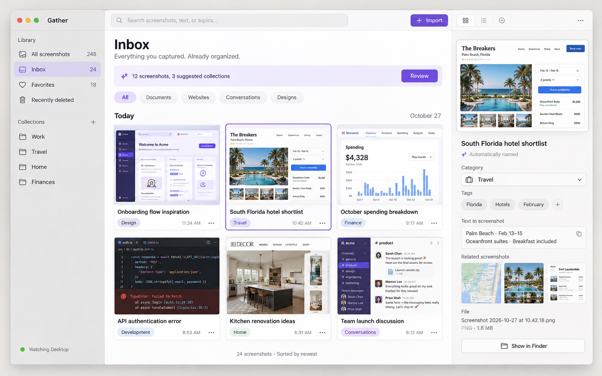

THE WEEKENDER
A slower kind of weekend.Palm Springs · Hotel reservation
Gather brings your screenshots together, organizes the details,
and helps you find what you saved.
Developer preview · macOS 14+ · Apple Silicon ⓘ

From a sea of filenames to ideas you can actually find.
Another screenshot. Another filename to forget.
A library that makes sense of what you capture.
Want your actual Desktop back, too? Use Organize Desktop to review and move selected screenshots into a folder, with undo.
Automatic import leaves originals in place. Illustrative examples.See how a hotel idea becomes something you can find again.
On your Mac. Your originals stay in place.
Text match: Palm Springs, California
Remember the topic, not the filename. Search recognized text, explore tags, and bring the right screenshots back into view.
Try hotel, design, or invoice—or choose a different tag.
3 sample screenshots · Your library will use your own content.
Get suggestions based on the text in your screenshots. Create your own tags, merge them, and make the library yours.
Review suggested groups and turn the useful ones into collections. You choose what belongs.
Reach Gather from the menu bar, pause intake anytime, and optionally start it at login.
A screenshot can hold a lot of your life. Gather recognizes its text and organizes it right on your Mac.
Choose the folder where your screenshots are saved during setup. Gather checks that folder for new screenshot files while it runs, including when its window is closed. Existing screenshots in the folder are gathered too. You can pause intake anytime or import individual images manually.
Automatic intake leaves your original files in place. Tags and collections organize your library without rearranging files. If you choose Organize Desktop, you’ll review the exact moves before confirming, with collision protection, per-file results, and undo.
The Gather app recognizes text and suggests organization locally. It doesn’t upload your screenshots, use a cloud model, require an account, or include analytics. You decide which files and folders it can read.
Yes. Edit titles, categories, and tags, or create tags of your own. Review a suggested group before saving it as a collection, leaving out anything that doesn’t belong. Your manual edits are preserved.
This download is for Apple Silicon Macs running macOS 14 Sonoma or later. It’s a native Mac app, and its text recognition doesn’t require Apple Intelligence. An Intel build isn’t included in this preview.
The current download is Gather 0.8.1, an early developer preview distributed as a ZIP. It’s signed locally and hasn’t been notarized by Apple, so macOS may prevent it from opening. A notarized release is still needed before a broad public launch.
Start with the folder you already use.
Let Gather take it from there.
Version 0.8.1 · Apple Silicon · macOS 14+
Early preview. Read release information.